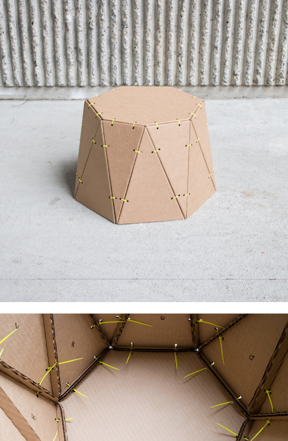
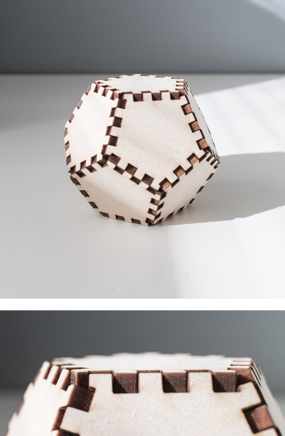
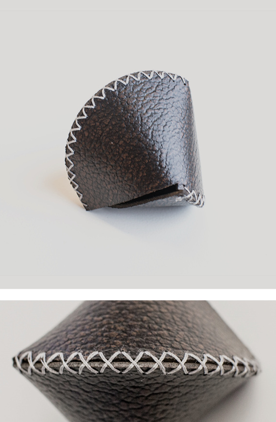
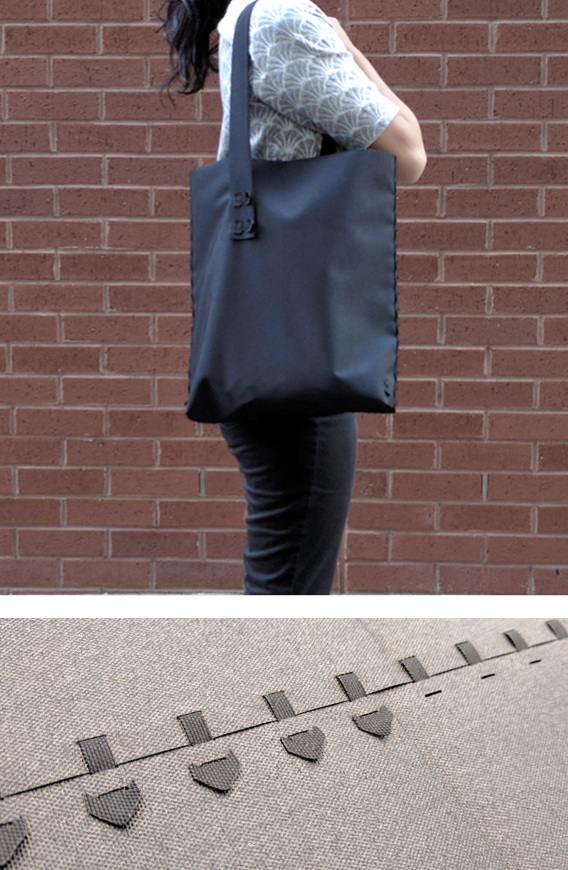
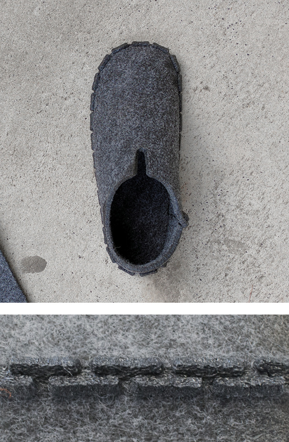
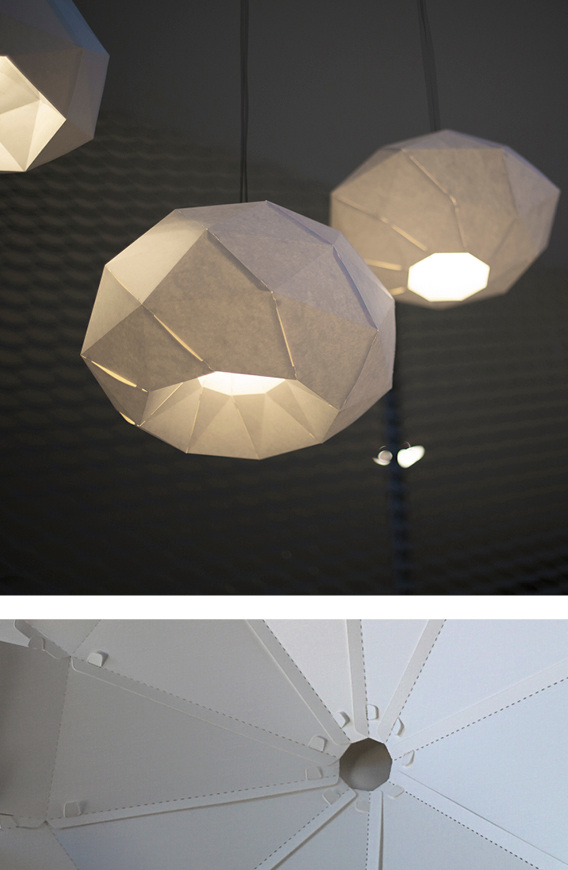

We research material systems to support interaction and experience design. Our practice blends designerly exploration and technical experiments with rigorous making.
We operate in the space between materials and artifacts; and specialize in building interactive systems by leveraging everyday materials and fabrication processes. This often yields new approaches and tools for constructing tangible interfaces.
The Interactive Materials Lab is housed within the Division of Industrial Design at the National University of Singapore.
Shape Haptics is a new approach for designers to rapidly design and fabricate passive force feedback mechanisms for physical interfaces.
Passive (unpowered) haptic mechanisms are found in objects and devices all around us—and they are challenging to design. Shape Haptics abstracts and broadens the expression of this class of haptic mechanisms.
Shape Haptics mechanisms consist of 2D laser cut parts fabricated from POM plastic. They comprise a compliant spring structure that engages with a sliding profile during interaction. By shaping the sliding profile, designers can easily customize the haptic force feedback delivered by the mechanism.
We demonstrate how Shape Haptics can be applied to a variety of applications, including changing the haptics of existing objects and interfaces, as well as building new interactive systems. We also developed a sandbox for others to explore and fabricate their own Shape Haptics mechanisms.
Shape Haptics sliders: the different edge profiles result in different force displacement curves.


Shape Haptics applications: modifying the haptics of everyday objects and interfaces, or constructing new devices.


The Shape Haptics sandbox enables designers to author different haptic profiles. The sandbox then generates all the necessary fabrication drawings for laser cutting.

This work explores two seemingly disparate affordances that paper offers for tangible interactions: paper as a printing medium for computer vision markers; and paper as a medium for creating pliable 3D objects. From this investigation, we uncovered a variety of tangible interactions that can be detected through different paper structures that construct and deconstruct computer vision markers. These paper structures are easy and economical to fabricate. Furthermore, many interactions can be sensed via a single camera.
Combining papercraft with computer vision to detect a button press.

Combining papercraft with computer vision to detect stretching.


Paper interfaces built with Printed Paper Markers.

Paper is a modest material with rich affordances for craft and design. It can be shaped into delicate objects that move with the slightest touch; or constructed into robust structures that support a building. We were attracted to the qualities of paper for facilitating tangible interactions and were particularly curious about kirigami (切り紙): a Japanese term we borrow to describe cutting, folding and bending flat sheets of paper into three-dimensional forms. Kirigami enables us to shape paper into pliable structures that move dynamically to afford tangible interactions.
We investigated the properties of carbon-coated paper, an electrically resistive material. This material is affected by folding and bending—two essential building blocks of kirigami objects. From this investigation, we developed a range of paper objects that facilitate tangible interaction.
Laser cutting is used to etch electrical traces onto the material. The final pattern is then cut and assembled into a three dimensional structure.

Sample applications: interactive paper push-buttons, interactive paper lampshade.

Mechamagnets is an approach for rapidly prototyping haptic and functional physical interfaces through desktop 3D printing and embedded static magnets.
Through Mechamagnets, designers have an efficient means of detailing the physical form, function and haptics of physical interfaces. This is achieved with 3D printed parts with embedded magnets that move in a various degrees of freedom. The configuration of magnets enable different passive haptic responses. These same magnets also participate in the instrumentation of the physical interface with the help of linear Hall effect sensors.
Tactile feedback with embedded magnets + Instrumentation with Hall effect sensors

Assembling example inputs
Mechamagnets design and fabrication
Blending Physical Inputs
Tangible Input Device
Embedding Haptic Movements
Laser cutting is widely used as a rapid modeling tool. However, designing and fabricating laser cut assemblies can be a complex and tedious process, especially for novice designers. Joints between different parts of an assembly are a critical feature to translate a digital model into a physical model through laser cutting.
Joinery was developed to facilitate this rapid modeling process as a parametric joint generation toolkit for laser cut assemblies. Through Joinery, designers simply define connections between parts of an assembly, while the system generates the joints. Joinery supports fabrication-aware design through six different joint profiles. These joint profiles were developed through extensive research and experiments with different materials and product types, and each profile caters to different design needs.
Flap joint
Finger joint
Hem joint
Loop Insert joint
Interlocking joint
Tab Insert joint
